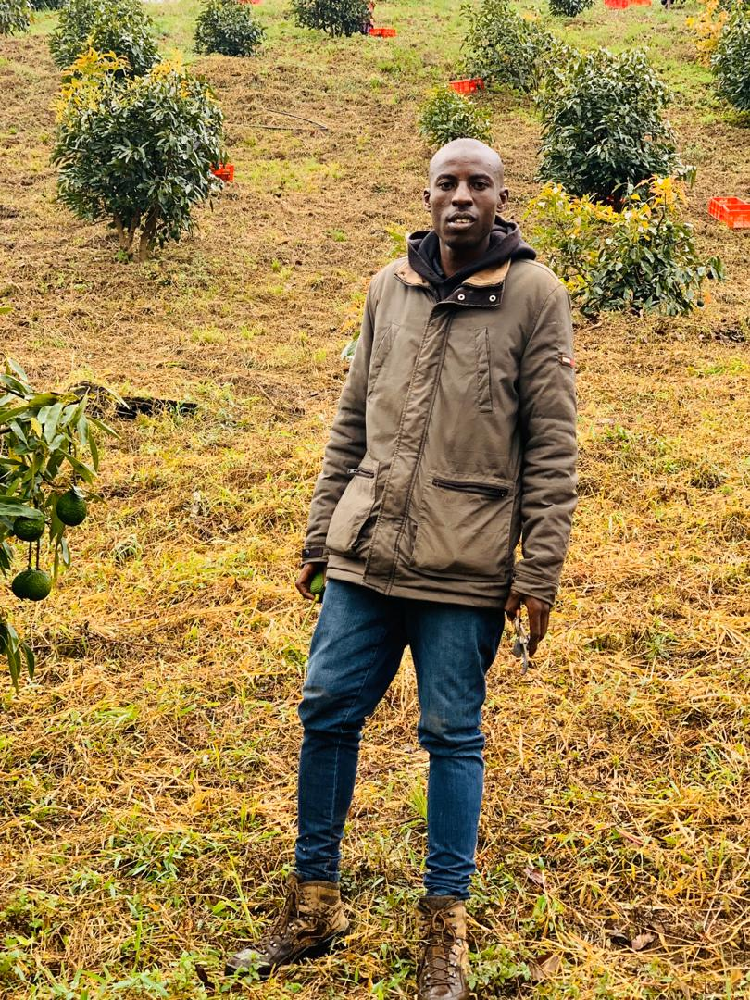
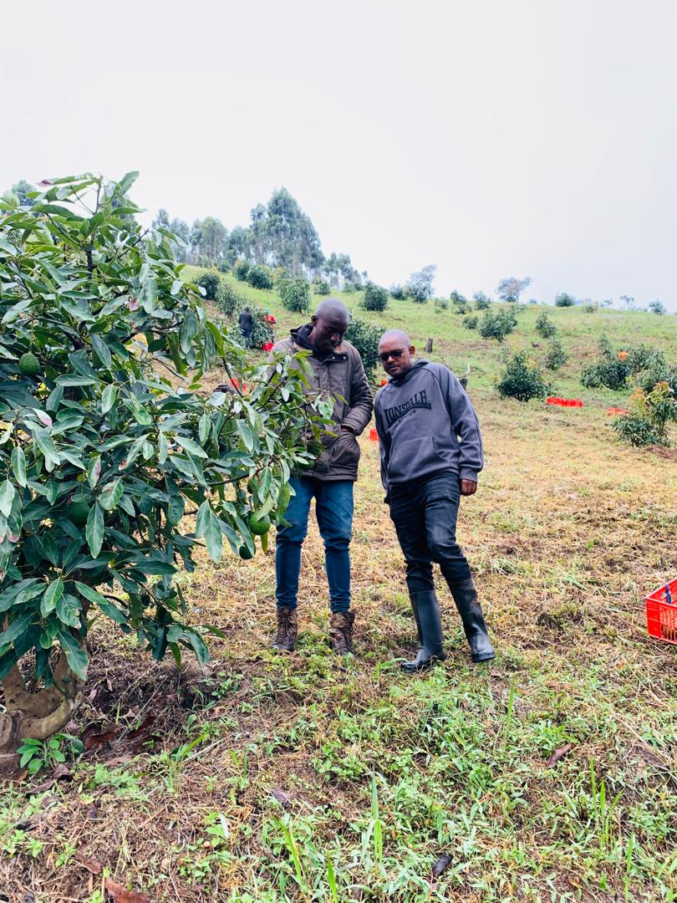

<div class="container ajax-container">
  <h2 class="text-6 font-weight-600 text-center mb-4">Farm visit at Njombe</h2>
  <div class="">
    <div class="">
      <div class="owl-carousel owl-theme single-slideshow" data-autoplay="true" data-loop="true" data-nav="true" data-items="1">
        <div class="item">  </div>
        <div class="item">  </div>
      </div>
    </div>
    <!-- <div class="col-sm-5">
      <h4 style="text-align:center;" class="text-4 font-weight-600">Project Description</h4>
      <p>Working hand-in-hand with SHIPO - an NGO focused on facilitating projects based on the priorities, needs and capacities of rural communities, we are currently establishing demonstration plots in Njombe to serve farmers and implement knowledge systems that are aimed at increasing agricultural production. Additionally, we show the farmers the right methods of farming, build their skills and showcase different farming methods. Our main focus is on horticultural products with a local market ideation scale, including greenhouse tomatoes, open field capsicum, open field cabbages and carrots. Recently, we have introduced raised ponds to create environmental awareness and support water conservation. </p>
      
      
  </div> -->
  
</div>